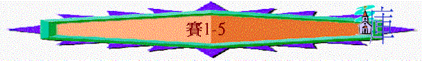

|
在 黑 暗 時 代 中 的 信 息（1-66） |
|||||
|
在變質國度中的斥責 |
在君亡噩訊中的異象 |
在無助孤身中的應許 |
在爭戰世界中的預言 |
在危難困境中的經歷 |
在暗淡前景中的安慰 |
|
1-5 |
6 |
7-12 |
13-35 |
36-39 |
40-66 |
「當烏西雅、約坦、亞哈斯、希西家作猶大王的時候，亞摩斯的兒子以賽亞得默示，論到猶大和耶路撒冷。」1:1
「可歎，忠信的城變為妓女！從前充滿了公平，公義居在其中，現今卻有兇手居住。」1:21
「我為我葡萄園所做之外，還有什麼可做的呢？我指望結好葡萄，怎麼倒結了野葡萄呢？」5:4
＊年期：烏西雅、約旦、亞哈斯、希西家作王／烏西雅作王？
＊背景：南國尚算穩定，仍有城土、人民，但內�堛瘧暔F生命卻是變質！
＊真理重點：神知道人內�堛漸遢銵炟咱i以扭轉＋人需要自潔回轉
∼1-5章的年代可能是泛指由烏西雅至希西家作王四個不同的年代，又或單是烏西雅的年代(因由6:1開始，烏西雅王已駕崩)
∼此段的中心是神原本期望祂揀選的城是忠信、公平，但卻充滿了敗壞，期望他們結好果子，卻變了質如野葡萄般，神透過以賽亞，斥責選民的敗壞，也宣告選民最終的結局
1.
斥責----選民的敗壞(1)
＊特點：很多直接嚴勵的指控，及很多敗壞的稱號，例如：『犯罪的國民』『敗壞的兒女』『所多瑪的官長』『蛾摩拉的百姓』『我的對頭』．．．．
A.兒女----悖逆！(1:2-9)
∼1:2、4、8也題及「兒女」
a.不合常理
「天哪，要聽！地啊，側耳而聽！因為耶和華說：我養育兒女，將他們養大，他們竟悖逆我。牛認識主人，驢認識主人的槽，以色列卻不認識；我的民卻不留意。」1:2-3
∼「天哪，要聽……..」是法庭上術語，神要控告選民的不是
∼牛與驢給人的印象是愚笨及頑梗畜類，但牠們也認識主人，回到主人的槽裡，但以色列人連牠們也不如，卻不認識神，寧願留意偶像，留意外邦人的幫助，也不注意神！
b.死性不改
∼屢次悖逆
(1)肉身受罰仍不改
「你們為什麼屢次悖逆，還要受責打嗎？你們已經滿頭疼痛，全心發昏。從腳掌到頭頂，沒有一處完全的，盡是傷口、青腫，與新打的傷痕，都沒有收口，沒有纏裹，也沒有用膏滋潤。」1:5-6
(2)地土荒涼仍不改
「你們的地土已經荒涼；你們的城邑被火焚毀。你們的田地在你們眼前為外邦人所侵吞，既被外邦人傾覆就成為荒涼。」1:7
(3)田地被吞仍不改
「僅存錫安城（原文作女子），好像葡萄園的草棚，瓜田的茅屋，被圍困的城邑。」1:8
∼「草棚」、「茅屋」是臨時建築物，十分簡陋，如荒涼的以色列地一樣
c.神仍有恩
「若不是萬軍之耶和華給我們稍留餘種，我們早已像所多瑪、蛾摩拉的樣子了。」1:9
B.敬拜----虛假!(1:10-20)
「你們這所多瑪的官長啊，要聽耶和華的話！你們這蛾摩拉的百姓啊，要側耳聽我們神的訓誨！」1:10
∼此段用了很多宗教祭禮詞語，表達神不喜悅他們有宗教的外貎，卻沒有美好生命行為的表現
∼而用「所多瑪」和「蛾摩拉」形容他們的敗壞
a.其虛假
「你們不要再獻虛浮的供物。香品是我所憎惡的；月朔和安息日，並宣召的大會，也是我所憎惡的；作罪孽，又守嚴肅會，我也不能容忍。」1:13
∼他們獻祭給神，也守節期聚會(嚴肅會是在節期中，招聚百姓神殿中有集會，通常在此聚會中百姓甚麼工作也不能作，有時會向神哀求或禁食)，但他們卻行罪孽，手滿了殺人的血
b.其惡果
(1)神不喜悅
「耶和華說：你們所獻的許多祭物與我何益呢？公綿羊的燔祭和肥畜的脂油，我已經夠了；公牛的血，羊羔的血，公山羊的血，我都不喜悅。」1:11
(2)神甚恨惡
「你們的月朔和節期，我心裡恨惡，我都以為麻煩；我擔當，便不耐煩。」1:14
(3)神不垂顧
「你們舉手禱告，我必遮眼不看；就是你們多多的祈禱，我也不聽。你們的手都滿了殺人的血。」1:15
c.其轉機
(1)百姓除惡行善
「你們要洗濯、自潔，從我眼前除掉你們的惡行，要止住作惡，學習行善，尋求公平，解救受欺壓的；給孤兒伸冤，為寡婦辨屈。」1:16-17
(2)神必赦免賜福
「耶和華說：你們來，我們彼此辯論。你們的罪雖像硃紅，必變成雪白；雖紅如丹顏，必白如羊毛。你們若甘心聽從，必吃地上的美物，」1:18-19
∼「硃紅」，「丹顏」也是一種深紅的持久性顏料，若選民離惡行善，即或他們的罪如丹顏般那樣不易褪色，神也可赦免
(3)若不聽從必被滅
「若不聽從，反倒悖逆，必被刀劍吞滅。這是耶和華親口說的。」1:20
C.城巿----變質!(1:21-23)
a.其變質
「可歎，忠信的城變為妓女！從前充滿了公平，公義居在其中，現今卻有兇手居住。你的銀子變為渣滓；你的酒用水攙對。」1:21-22
∼妓女給人不忠及淫亂的感覺，與忠信卻相反
∼神所揀選的城由忠信及公義變為不忠滿偶像，沒有信實、流人血的地方
∼用銀子變為渣滓，酒變為用水攙對更強化它變質而失去寶貴的味道
b.其實質
「你的官長居心悖逆，與盜賊作伴，各都喜愛賄賂，追求贓私。他們不為孤兒伸冤；寡婦的案件也不得呈到他們面前。」1:23
∼官長與盜賊為伴，失去了公平，公義的角色，也不值得人民信靠
D.錫安----更新
∼神所選的城變質了，但神卻至終要錫安(也指耶路撒冷)可以有更新
a.得除淨
「我必反手加在你身上，煉盡你的渣滓，除淨你的雜質。」1:25
b.得復還
「我也必復還你的審判官，像起初一樣，復還你的謀士，像起先一般。然後，你必稱為公義之城，忠信之邑。」1:26
∼回應1:21-23中忠信的城卻變了妓女，官長沒公平受賄賂，將來此城必有回公平審判官及公義的領袖，城必變為公義及忠信之城
c.得救贖
「錫安必因公平得蒙救贖；其中歸正的人必因公義得蒙救贖。但悖逆的和犯罪的必一同敗亡；離棄耶和華的必致消滅。那等人必因你們所喜愛的橡樹抱愧；你們必因所選擇的園子蒙羞。因為，你們必如葉子枯乾的橡樹，好像無水澆灌的園子。有權勢的必如麻瓤；他的工作好像火星，都要一同焚毀，無人撲滅。」1:27-31
「他們被殺的人倒在他們祭壇四圍的偶像中，就是各高岡、各山頂、各青翠樹下、各茂密的橡樹下，乃是他們獻馨香的祭牲給一切偶像的地方。那時，他們就知道我是耶和華。」結6:13
∼選民行回公平公義，將得救贖
∼但若仍悖逆行惡的，及拜偶像(橡樹----可能指他們敬拜神聖的橡樹，而園子可能是指他們獻祭給偶像的地方)，必會敗亡
∼「麻瓤」又可作火絨，是易燃物
2.
宣告----選民的終局(2-4)
＊特點：很多『末後的日子』、『到那日』、『降罰的一個日子』類似字眼
∼當選民敗壞後，他們最終的結局會是怎樣？
A.神的山----升高(2:1-4)
「末後的日子，耶和華殿的山必堅立，超乎諸山，高舉過於萬嶺；萬民都要流歸這山。必有許多國的民前往，說：來吧，我們登耶和華的山，奔雅各神的殿。主必將他的道教訓我們；我們也要行他的路。因為訓誨必出於錫安；耶和華的言語必出於耶路撒冷。他必在列國中施行審判，為許多國民斷定是非。他們要將刀打成犁頭，把槍打成鐮刀。這國不舉刀攻擊那國；他們也不再學習戰事。」2:2-4
a.堅立世上
b.超越眾山
c.吸引萬民
d.統管列邦
∼「耶和華殿的山」應指摩利亞山
∼「將刀打成犂頭……」指將來沒有爭戰，不需要武器，武器也變為農作之用具
B.狂傲者----敗落(2:5-3:12)
∼人因著自高，敬拜自己所選之物，倚靠自己所誇之東西，不倚靠神，但有神終審判他們
a.神離棄拜偶像百姓
「耶和華，你離棄了你百姓雅各家，是因他們充滿了東方的風俗，作觀兆的，像非利士人一樣，並與外邦人擊掌。他們的國滿了金銀，財寶也無窮；他們的地滿了馬匹，車輛也無數。他們的地滿了偶像；他們跪拜自己手所造的，就是自己指頭所做的。卑賤人屈膝；尊貴人下跪；所以不可饒恕他們。」2:6-9
∼非利士人敬拜大袞、亞斯他錄和巴力，以色列人也像他們一樣敬拜偶像
∼「擊掌」是當時生意成時之禮，與外邦人擊掌可能涉教異風俗
b.神降罰狂傲自誇者
「你當進入巖穴，藏在土中，躲避耶和華的驚嚇和他威嚴的榮光。到那日，眼目高傲的必降為卑；性情狂傲的都必屈膝；惟獨耶和華被尊崇。必有萬軍耶和華降罰的一個日子，要臨到驕傲狂妄的；一切自高的都必降為卑；」2:10-12
∼高臺、堅固城、高山、他施船隻來形容他們所誇耀之物，有一日神的審判卻臨到狂傲自誇的人
c.神廢掉人所造偶像
「偶像必全然廢棄。耶和華興起，使地大震動的時候，人就進入石洞，進入土穴，躲避耶和華的驚嚇和他威嚴的榮光。到那日，人必將為拜而造的金偶像、銀偶像拋給田鼠和蝙蝠。」2:18-20
∼以前所拜偶像均無用，只好丟給動物
d.神除掉人所倚靠的
(1)除掉倚靠
「主萬軍之耶和華從耶路撒冷和猶大，除掉眾人所倚靠的，所仗賴的，就是所倚靠的糧，所仗賴的水；除掉勇士和戰士，審判官和先知，占卜的和長老，五十夫長和尊貴人，謀士和有巧藝的，以及妙行法術的。」3:1-3
(2)失去領袖
「主說：我必使孩童作他們的首領，使嬰孩轄管他們。百姓要彼此欺壓；各人受鄰舍的欺壓。少年人必侮慢老年人；卑賤人必侮慢尊貴人。人在父家拉住弟兄，說：你有衣服，可以作我們的官長。這敗落的事歸在你手下吧！那時，他必揚聲說：我不作醫治你們的人；因我家中沒有糧食，也沒有衣服，你們不可立我作百姓的官長。」3:4-7
∼此段描述他們失去領袖的慘況
(3)傾倒原因
「耶路撒冷敗落，猶大傾倒；因為他們的舌頭和行為與耶和華反對，惹了他榮光的眼目。他們的面色證明自己的不正；他們述說自己的罪惡，並不隱瞞，好像所多瑪一樣。他們有禍了！因為作惡自害。你們要論義人說：他必享福樂，因為要吃自己行為所結的果子。惡人有禍了！他必遭災難！因為要照自己手所行的受報應。至於我的百姓，孩童欺壓他們，婦女轄管他們。我的百姓啊，引導你的使你走錯，並毀壞你所行的道路。」3:8-12
∼因為他們自持與神反對，作惡也不知羞恥，結果他們卻遭惡報
C.眾百姓----受審(3:13-4:1)
a.欺厭百姓的首領受審
「耶和華起來辯論，站著審判眾民。耶和華必審問他民中的長老和首領，說：吃盡葡萄園果子的就是你們；向貧窮人所奪的都在你們家中。主萬軍之耶和華說：你們為何壓制我的百姓，搓磨貧窮人的臉呢？」3:13-15
b.狂傲無恥的女子受審
「耶和華又說：因為錫安的女子狂傲，行走挺項，賣弄眼目，俏步徐行，腳下玎璫，所以，主必使錫安的女子頭長禿瘡；耶和華又使他們赤露下體。到那日，主必除掉他們華美的腳釧、髮網、月牙圈、」3:16-18
「在那日，七個女人必拉住一個男人，說：「我們吃自己的食物，穿自己的衣服，但求你許我們歸你名下；求你除掉我們的羞恥。」」4:1
∼錫安的女子著重外表，卻忽略內心的謙卑與生活的行為，所以神要審判她們，令她們受羞辱
∼而他們所倚靠的男子也多有死去，所以七個女人(代表多人)會拉住一個男子尋求倚靠
D.以色列----更新(4:2-6)
a.關乎出產
「到那日，耶和華發生的苗必華美尊榮，地的出產必為以色列逃脫的人顯為榮華茂盛。」4:2
∼「耶和華所發生的苗」可指神使地土有出產，也指向彌賽亞必在地受尊榮
b.關乎選民
「主以公義的靈和焚燒的靈，將錫安女子的污穢洗去，又將耶路撒冷中殺人的血除淨。那時，剩在錫安、留在耶路撒冷的，就是一切住耶路撒冷、在生命冊上記名的，必稱為聖。」4:3-4
∼錫安的百姓必得潔淨，「在生命冊」上被記下，得生命，也稱為聖
c.關乎錫安
「耶和華也必在錫安全山，並各會眾以上，使白日有煙雲，黑夜有火焰的光。因為在全榮耀之上必有遮蔽。必有亭子，白日可以得蔭避暑，也可以作為藏身之處，躲避狂風暴雨。」4:5-6
∼用榮光、亭子來表達得神保護及蔭庇
3.憤歎----選民的表現(5)
「我要為我所親愛的唱歌，是我所愛者的歌，論他葡萄園的事：我所親愛的有葡萄園在肥美的山岡上。」5:1
＊特點：充滿耶和華的怒氣；另外很多『禍哉』字眼
∼神用詩歌來表達祂對選民的失望與憤歎！
A.選民----令神失望
∼神用葡萄園比喻以色列人
a.神悉心的栽種
「他刨挖園子，撿去石頭，栽種上等的葡萄樹，在園中蓋了一座樓，又鑿出壓酒池；指望結好葡萄，反倒結了野葡萄。耶路撒冷的居民和猶大人哪，請你們現今在我與我的葡萄園中，斷定是非。我為我葡萄園所做之外，還有什麼可做的呢？我指望結好葡萄，怎麼倒結了野葡萄呢？」5:2-4
b.人失敗的表現
「萬軍之耶和華的葡萄園就是以色列家；他所喜愛的樹就是猶大人。他指望的是公平，誰知倒有暴虐（或作：倒流人血）；指望的是公義，誰知倒有冤聲。」5:7
c.神放棄的審判
「我必使他荒廢，不再修理，不再鋤刨，荊棘蒺藜倒要生長。我也必命雲不降雨在其上。」5:6
B.禍患----必然臨到(5:8-20)
∼本段有很多「禍哉」字眼
a.禍哉
(1)單顧自己者的禍哉
「禍哉！那些以房接房，以地連地，以致不留餘地的，只顧自己獨居境內。我耳聞萬軍之耶和華說：必有許多又大又美的房屋成為荒涼，無人居住。三十畝葡萄園只出一罷特酒；一賀梅珥穀種只結一伊法糧食。」5:8-10
(2)酗酒不念神的禍哉
「禍哉！那些清早起來追求濃酒，留連到夜深，甚至因酒發燒的人。他們在筵席上彈琴，鼓瑟，擊鼓，吹笛，飲酒，卻不顧念耶和華的作為，也不留心他手所做的。所以，我的百姓因無知就被擄去；他們的尊貴人甚是飢餓，群眾極其乾渴。故此，陰間擴張其欲，開了無限量的口；他們的榮耀、群眾、繁華，並快樂的人都落在其中。」5:11-14
(3)作惡傲慢者的禍哉
「禍哉！那些以虛假之細繩牽罪孽的人！他們又像以套繩拉罪惡，說：任他急速行，趕快成就他的作為，使我們看看；任以色列聖者所謀劃的臨近成就，使我們知道。」5:18-19
∼有些人一身牽著罪孽，自持在人面前行惡，不怕神審判的人也必受禍患
(4)癲倒是非者的禍哉
「禍哉！那些稱惡為善，稱善為惡，以暗為光，以光為暗，以苦為甜，以甜為苦的人。」5:20
(5)自以為有智慧的禍哉
「禍哉！那些自以為有智慧，自看為通達的人。」5:21
(6)受賄不公者的禍哉
「他們因受賄賂，就稱惡人為義，將義人的義奪去。」5:23
b.受審判
(1)真神而來的怒火
「所以，耶和華的怒氣向他的百姓發作。他的手伸出攻擊他們，山嶺就震動；他們的屍首在街市上好像糞土。雖然如此，他的怒氣還未轉消；他的手仍伸不縮。」5:25
(2)從遠方而來的審判
「他必豎立大旗，招遠方的國民，發嘶聲叫他們從地極而來，看哪，他們必急速奔來。其中沒有疲倦的，絆跌的；沒有打盹的，睡覺的；腰帶並不放鬆，鞋帶也不折斷。他們的箭快利，弓也上了弦。馬蹄算如堅石，車輪好像旋風。他們要吼叫，像母獅子，咆哮，像少壯獅子；他們要咆哮抓食，坦然叼去，無人救回。」5:26-29
∼此「遠方而來」可能指神用亞述攻擊消滅以色列